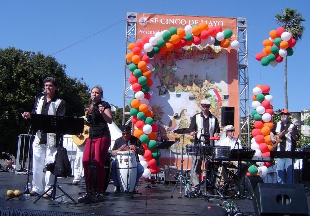

These are just some of the places Conjunto Picante has performed:
Private Events
Stanford University - Los Salseros de Stanford
College of San Mateo
Cigar Bar, San Francisco
Menlo Park Music in the Park
Napa Latino Heritage Day
Angelica's, Redwood City
BORICUAAID: A Benefit for Puerto Rico
San Francisco Cinco de Mayo Festival, Main Stage